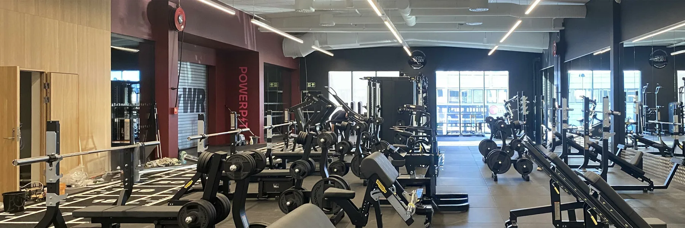

3T Lade
07Treningssenter og spa
Helse · rekreasjon · livssyn · Kultur · idrett · Ombruk · transformasjon · InteriørSe bildegalleri

- Byggherre
- Haakon VIIs gt 11 AS
- Byggeår
- 2024-2025
- Medarbeidere
- Jørgen Tellefsen Relling, Astrid Nordmark Dahl, Bodil Angard Rian, Rita Morken
Om prosjektet
Tidligere butikk- og restaurantlokaler på Lade er ombygget til treningssenter og spa. Nye vinduer slipper dagslyset langt inn i anlegget, mens materialer og romforløp binder trening, garderober og opphold sammen.
Bilder & tegninger9 bilder


La oss begynne med en samtale